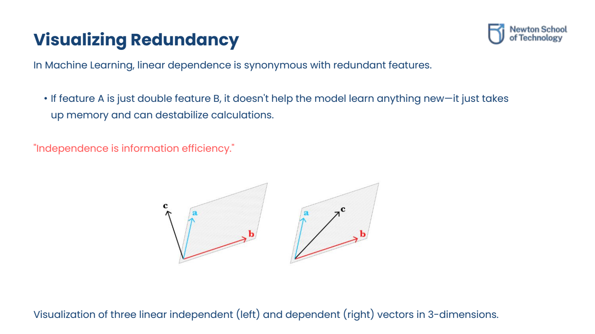
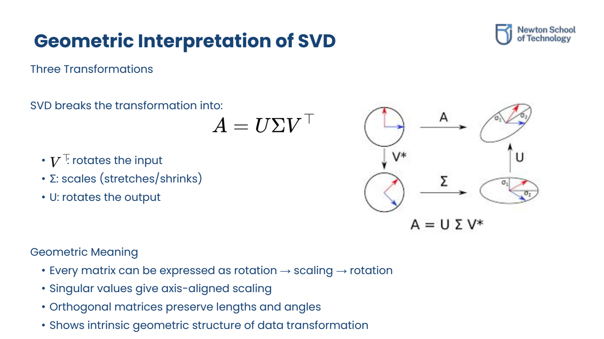
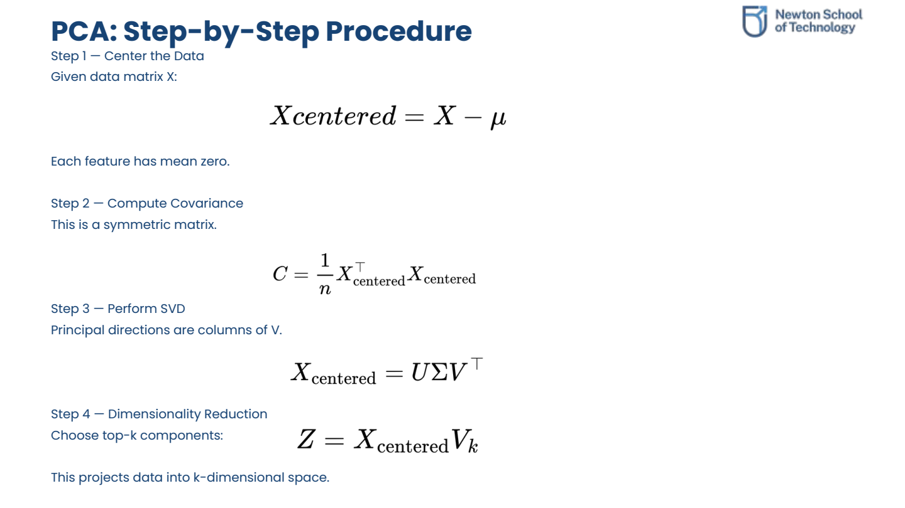

Vector Spaces & Matrix Rank
1.1 Linear Independence & Span
A set of vectors is linearly independent if none of them can be written as a linear combination of the others. The span of a set of vectors is the set of all possible linear combinations that can be constructed with them.

Comparison: Three independent vectors spanning 3D space vs. three dependent vectors restricted to a flat 2D plane.
1.2 Matrix Rank & Information Efficiency
The rank of a matrix is the number of linearly independent rows or columns it contains. Rank represents the unique, non-redundant information present in the matrix. In ML datasets, high correlation between features produces low-rank matrices where compression is possible.
Consider matrix A:
A = [1 2 3]
[2 4 6]Row 2 is exactly 2 × Row 1. The rows are dependent. The rank of A is 1 (only one direction of unique information).
1.3 Column, Row & Null Spaces
A matrix defines three fundamental vector spaces:
- Column Space (C(A)): All possible linear combinations of the columns (outputs of Ax). Represents the dimensions the matrix can transform inputs into.
- Row Space: All possible linear combinations of the rows. Describes the constraints imposed on inputs.
- Null Space (N(A)): All vectors x that satisfy Ax = 0. Represents the redundant input directions that the matrix completely ignores (maps to zero).
Orthogonality & Vector Projection
2.1 Orthogonality in Learning
Two vectors are orthogonal if their inner product is zero: x · y = 0. Geometrically, they form a 90-degree angle. In machine learning, orthogonal weights minimize gradient overlapping and improve training flow, while orthogonal feature embeddings prevent feature interference.
2.2 Vector Projection
The projection of vector b onto vector a computes the "shadow" of b along the direction of a. Projection is used in dimensionality reduction to isolate useful coordinates and drop irrelevant perpendicular noise components.
proja(b) = ( (a · b) / (a · a) ) a
Eigenvalues & Eigenvectors
3.1 Geometric Concept
For a square matrix A, an eigenvector (v) is a special direction that does not change direction when transformed by A. It is only stretched or compressed by a scalar factor, which is the eigenvalue (λ).
A v = λ v
3.2 Matrix Diagonalization
If an n × n matrix has n linearly independent eigenvectors, it can be diagonalized into a scaling matrix: A = P D P-1, where columns of P are eigenvectors and diagonal elements of D are eigenvalues. Diagonalization decouples multi-dimensional transformations into independent scaling operations.
3.3 Symmetric Matrices & Covariance
Symmetric matrices (A = AT) have ideal mathematical properties: all eigenvalues are real, and eigenvectors are orthogonal. The covariance matrix of a dataset (XTX) is symmetric, making its eigenvectors (principal directions) orthogonal and stable.
SVD & PCA Connections
4.1 Singular Value Decomposition (SVD)
SVD generalizes eigen-decomposition to any m × n matrix. It decomposes the matrix into a rotation, an axis-aligned scaling, and a final rotation.
A = U Σ VT
Where:
- U: Left singular vectors (orthonormal matrix, output rotation).
- Σ: Singular values (diagonal matrix of scaling values, sorted by importance).
- V: Right singular vectors (orthonormal matrix, input rotation).

The sequence of SVD transformations: Rotation by VT, scaling by Σ, and final rotation by U.
4.2 Low-Rank Matrix Compression
According to the Eckart–Young Theorem, we can construct the best rank-k approximation of a matrix A by keeping only its top-k singular values and truncating the rest. This technique is used to compress word embeddings, Vision feature maps, and large linear layers in LLMs.
4.3 Principal Component Analysis (PCA)
PCA is a dimensionality reduction method that projects data onto the directions of maximum variance. Applying SVD to a centered data matrix X directly reveals the principal components:
- The columns of V are the principal component directions.
- The singular values in Σ represent the explained variance of each component.

The step-by-step PCA process: centering the data, computing the covariance matrix, performing SVD, and reducing dimensions.
Conceptual Practice Exercises
Test your understanding of eigenvalues, matrix ranks, SVD, and PCA. Click on the questions to reveal step-by-step solutions.
5.1 If a matrix is 100×100 but its rank is only 5, what does that mean?
This means that out of 100 rows (or columns), only 5 are linearly independent. The remaining 95 rows/columns are redundant linear combinations of those 5. Geometrically, although the matrix is represented in a 100-dimensional space, the data is entirely confined to a 5-dimensional subspace. This indicates massive feature redundancy, meaning the matrix can be significantly compressed (e.g., via SVD/PCA) without losing essential information.
5.2 What does a large null space imply about a matrix?
By the Rank-Nullity Theorem, Rank(A) + Nullity(A) = n (where n is the number of columns). A large null space implies a small column space (low rank). In machine learning, a large null space means the matrix collapses many different input vectors to zero, signifying that a high volume of input features are ignored or deemed redundant, and do not contribute to the output mapping.
5.3 Which of these sets is linearly independent? A: {(1,2), (2,4)} vs. B: {(1,2), (2,3)}
Set B is linearly independent.
In Set A, the second vector is exactly twice the first: (2, 4) = 2 * (1, 2). Thus, they are linearly dependent (parallel, lying on the same line).
In Set B, there is no scalar c such that c * (1, 2) = (2, 3). They point in different directions, thus spanning a full 2D plane independently.
5.4 If x = [3, 4] and y = [4, -3], are they orthogonal?
To check for orthogonality, compute their dot product:
x · y = (3 × 4) + (4 × -3) = 12 - 12 = 0
Yes, since the dot product is exactly 0, the vectors are orthogonal (form a 90-degree angle).
5.5 If vector b lies entirely in the null space of A, what is its projection onto the column space of A?
By fundamental vector space geometry, the null space N(A) is orthogonal to the row space of A, and the left null space N(AT) is orthogonal to the column space C(A). If we consider the column space of A, a vector lying entirely in the orthogonal null space will have no component in the direction of the column space.
Therefore, its projection onto the column space is the zero vector (0).
5.6 If A v = 5v, what does the eigenvalue 5 mean?
It means that when the matrix linear transformation A is applied to the eigenvector v, v does not rotate or change its directional axis. It simply stretches in length by a scaling factor of 5.
5.7 Why do eigenvectors matter in PCA?
In PCA, we construct the covariance matrix of our features. The eigenvectors of this covariance matrix represent the Principal Components (the axes/directions of maximum variance along which the data is spread). By projecting our data onto the top-k eigenvectors (with the largest eigenvalues), we reduce dimensionality while preserving maximum information and removing feature correlation.
5.8 Why does PCA always use a symmetric matrix?
PCA analyzes data variance via the covariance matrix (calculated as Σ = XTX / (n - 1)). By definition, covariance between feature i and feature j equals covariance between j and i, making the matrix symmetric. Symmetric matrices are mathematically guaranteed to have:
- Only real eigenvalues (no imaginary scaling numbers).
- Mutually orthogonal eigenvectors, which ensures the principal component directions are perpendicular (completely decorrelated features).
Original PDF Notes
Below is the original PDF document for your reference: